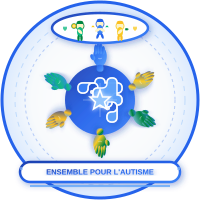
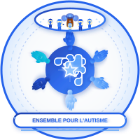
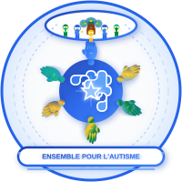

🧩 Présentation des Logos
Plateforme des Associations d'Autisme du Sénégal
9 Logos Professionnels
36 Fichiers PNG Haute Qualité
Guide Complet d'Utilisation et de Promotion
Janvier 2026
Plateforme des Associations d'Autisme du Sénégal
9 Logos Professionnels
36 Fichiers PNG Haute Qualité
Guide Complet d'Utilisation et de Promotion
Janvier 2026
Thème Communautaire - Solidarité et Protection
L'union fait la force
Six mains colorées en cercle parfait symbolisant la solidarité, avec trois enfants joyeux au sommet représentant l'inclusion. Utilise exclusivement la palette bleu autisme (#1e40af à #dbeafe), reconnue mondialement.
"Ensemble, protégeons et accompagnons nos enfants"

Fierté nationale et inclusion
Variante culturelle avec couleurs du drapeau sénégalais. Les six mains arborent des gradients vert (#00853f), jaune (#f9ca24) et bleu (#2563eb). Les trois enfants portent ces couleurs nationales avec des petits cœurs symbolisant l'amour.
"Le Sénégal uni pour l'autisme - Ensemble nous sommes plus forts"

L'arbre de vie africain
Baobab majestueux avec tronc brun (#78350f à #a16207) et feuillage parsemé de pièces de puzzle bleues. Cinq enfants entourent l'arbre en ronde joyeuse, protégés par le cercle des six mains colorées.
"Comme le baobab, notre engagement est enraciné et durable"

Tradition sénégalaise et modernité
Baobab avec feuillage vert éclatant (#10b981) et pièces de puzzle jaunes (#f9ca24). Les cinq enfants portent des vêtements aux couleurs nationales (vert, bleu, jaune), créant une fusion parfaite tradition-modernité.
"Nos racines sénégalaises, notre force pour l'autisme"
Thème Contemporain - Innovation et Professionnalisme
Minimalisme professionnel international
Lettre "P" épurée (Pour l'Autisme) en dégradé bleu autisme, encadrée de deux swoosh fluides. Puzzle intégré dans le P, avec deux petites pièces décoratives. Design minimaliste web 3.0.
"Pour l'autisme, avançons ensemble vers demain"
Fusion identité moderne et patriotisme
Lettre "A" en gradient tricolore vert-bleu-jaune Sénégal, avec rubans swoosh latéraux. Deux puzzles au sommet, étoile dorée couronnant le design. Très accrocheur visuellement.
"L'autisme aux couleurs du Sénégal - Notre combat, notre fierté"
Inclusion et unité universelle
Utilisation : Campagnes d'inclusion, écoles, formations, badges de sensibilisation
Slogan : "Dans notre cercle, chacun a sa place"
Solidarité en mouvement
Utilisation : Levées de fonds, galas, partenariats entreprises, rapports annuels
Slogan : "Solidaires aujourd'hui, inclusifs demain"
Excellence et institutionnalisation
Utilisation : Documents gouvernementaux, bailleurs internationaux, cérémonies officielles, plaques
Slogan : "Plateforme d'excellence pour un avenir inclusif"
Guide Rapide de Sélection par Contexte
| Logo | Public Cible | Meilleurs Contextes | Émotion |
|---|---|---|---|
| V2 Improved Bleu | International, ONG | Web international, ONU, OMS | Espoir, protection |
| V2 Improved Sénégal | National, grand public | Événements locaux, médias SN | Fierté, unité |
| V2 Baobab Bleu | Afrique, rural | Conférences Afrique, rural | Sagesse |
| V2 Baobab Sénégal | Sénégalais, diaspora | Fêtes nationales, régions | Tradition |
| Moderne 1 "P" | Professionnels, web | Digital, applications | Dynamisme |
| Moderne 2 "A" | Jeunesse, urbain | Réseaux sociaux, events | Énergie |
| Moderne 3 "P" ⭕ | Éducation, familles | Écoles, formations | Inclusion |
| Moderne 4 "S" | Donateurs, partenaires | Fundraising, galas | Générosité |
| Moderne 5 "P" 💎 | Gouvernement, institutions | Officiels, académiques | Excellence |
1. Cohérence : Choisir 2-3 logos principaux pour reconnaissance de marque
2. Adaptation : Utiliser le bon logo selon le contexte (voir tableau)
3. Qualité : Toujours utiliser haute résolution pour impression
4. Respect : Ne pas déformer, recolorer ou modifier les logos
5. Visibilité : Privilégier fonds clairs pour meilleure lisibilité
Notre engagement, votre confiance 🇸🇳
Plateforme des Associations d'Autisme du Sénégal • Janvier 2026